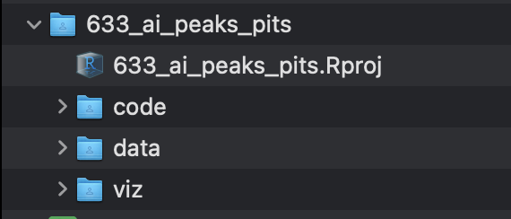

5 A Data Science project
5.1 What is a Data Science project?
Aside from the obvious definition of a project (a piece of work planned and executed to achieve a particular aim- in this case facilitate a client’s needs), what this section is referring to is the structure and usage of a coding project.
5.2 Where are projects saved/located?
All projects need to be saved onto the Google Drive. We have our own Data Science section, where we save our project and internal work (code, data, visualisations etc), which is in the filepath:
Share_Clients/data_science_project_work/
You should get access to this directory straight away.
Within the data_science_project_work directory there are subdirectories of all of our clients, such as data_science_project_work/microsoft, data_science_project_work/dyson etc.

data_science_project_work/ directory with client-specific subdirectoriesYou will see that we refer to the location of directories mainly by their filepath, with the above screenshot of the Google Drive just for full transparency and clarity.
There are no two ways about it, getting familiar with working with filepaths in the command line (or in a script) is non-negotiable, but will become second nature and you will be tab-completing filepaths in no time at all!
5.3 RStudio Projects
We are primarily an R focused team, and as such we utilise RStudio projects to help keep all the files associated with a given project together in one directory.
To create a RStudio Project, click File > New Project and then follow the below steps, but call the directory the name of the project (if a Microsoft project, appended by the project number) rather than ‘r4ds’. Be sure to make sure the option ‘Create project as subdirectory of’ is the client directory on the Drive (in the case of Microsoft, this is Share_Clients/data_science_project_work/microsoft/project_work/).

Once this process is complete, there should be a new project folder in the client directory, with a .Rproj file within it.
If this is your first time using RStudio Projects, we recommend reading this section within the R for Data Science book, to familiarise yourself with some more intricacies of Project work within R (such as relative and absolute paths) which we would not do justice summarising here.
5.4 Components of a DS project
DS projects consist of a parent project directory, with an associated .Rproj file, and three compulsory subdirectories code, data, and viz (all of which are made manually).

Whilst there are no prizes for what goes in each subdirectory, it can be useful to have a structure in place to facilitate workflow ease.
5.4.0.1 code
Within the code subdirectory is where all scripts should be kept. We utilise .Rmd (R Markdown) documents rather than basic .R scripts for our code.
We do this for a few reasons, but the main benefits include:
- It acts as an environment in which to do data science- we can capture not only what we did, but importantly why we did it
- We can easily build and export a variety of different output formats from a R Markdown document (PDF, HTML, slideshow etc)
As part of our commitment to literate programming, there are some good practices that we can implement at this level of abstraction.
Firstly, do not have extremely long .Rmd documents, as this is no good for anybody. Instead split up your documents into different sections based on the purpose of the code.
Whilst this can be a bit subjective, a good rule of thumb is to have a separate .Rmd for each aspect of a workflow. For example, we might have one .Rmd for reading in raw data, another for cleaning the data, another for EDA, and another for performing topic modelling etc.
We should also follow the tidyverse style guide in the naming of files, which states:
If files should be run in a particular order, prefix them with numbers
Therefore it makes sense to prefix our files, as we must load in the raw data before we can clean the data, and we must clean the data before we can perform certain analyses etc.
So we might have something like 00_load_data.Rmd, 01_clean_data.Rmd, 02_topic_modelling.Rmd.
5.4.0.2 data
data is where we save any data file that comes from a project.
The vast majority of projects will involve analysing an export from a social listening platform, such as Sprinklr. Analysts will save the export in the form of .csv or .xlsx files on the Drive (not within the Data Science section). As Sprinklr limits its exports to 10k rows of data per export file, we often are presented with 10s/100s of files with raw mentions. Therefore once we read these files into R, it is a good opportunity to save them as an .Rds in the code folder using the function write_rds() to avoid having to reread the raw excel or csv files in again.
It is within data where you would also save cleaned datasets and the outputs of different analyses (not visualisations though). This is not limited to .Rds files, but could also be word documents, excel spreadsheets etc.
As projects get more complex with many analyses, it can be easy to clutter this subdirectory. As such, it is recommended to make folders within data to help maintain structure. This means it is easy to navigate where cleaned data is because it will be in a folder such as data/cleaned_data and a dataframe with topic labels would be in data/topic_modelling.
Generally speaking, space is cheaper than time. If in doubt, save an intermediate dataframe after an analysis if you think you’ll need it in the future. It is better to run an analysis once and save the output to never look at it again, than to run an analysis, not save the output, and then need to rerun the analysis the following week.
5.4.0.3 viz
Any visualisation that is made throughout the project should be saved here. Again, this directory should be split into separate folders to keep different analyses separate, navigable, and clear. This is especially useful if there is are visualisations being made of the same analysis mapped over different variables or parameters, or if the project involves the analysis of separate products or brands.
For example, the below shows a screenshot of a viz folder for a project that looked at three products. Within viz the plots for each brand are in their own folder, and within each brand (chatgpt, copilot, gemini) there are further folders to split up the type of visualisations created (area_charts, eda etc), with even a third level of subdirectory (area_charts/peaks and area_charts/pits).